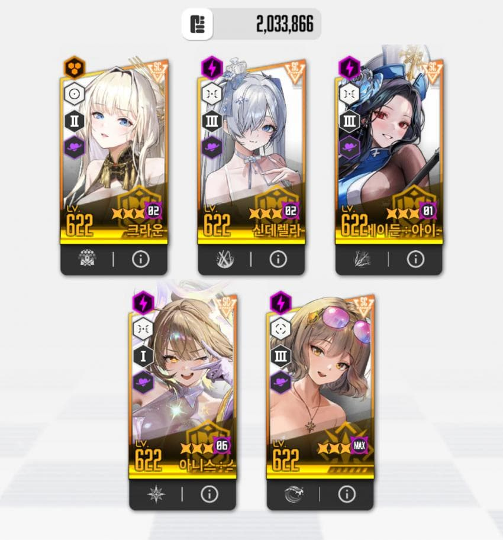
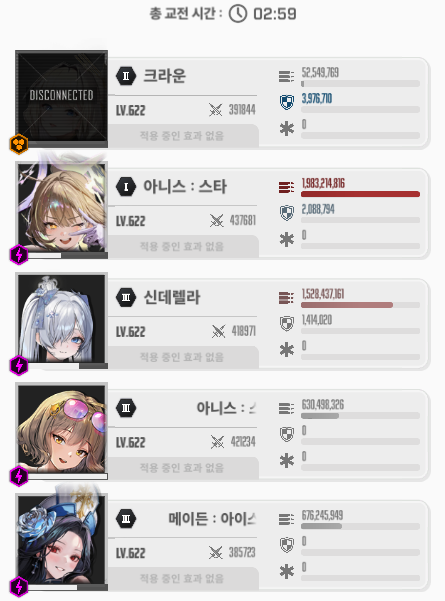
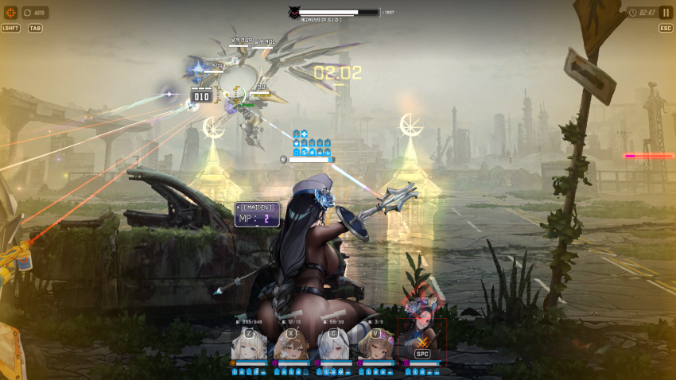
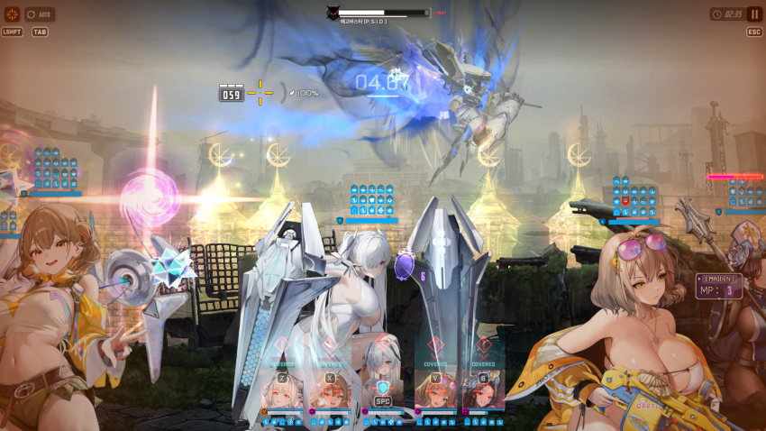
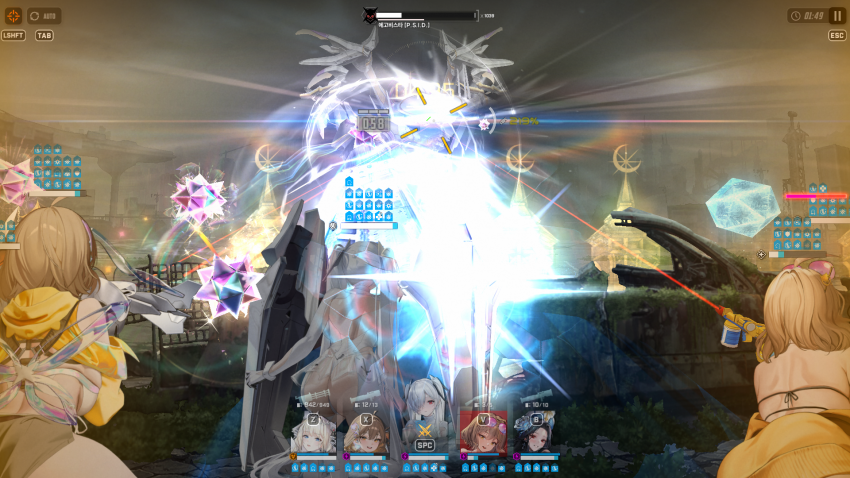
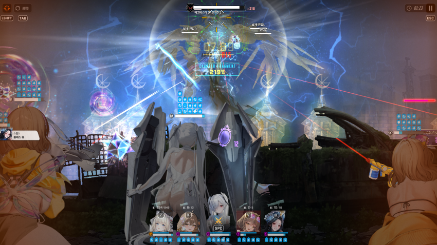

사용한 덱

딜표

2분 59초 동안 뚜들겨 패서 겨우 깬 기념으로 공략 글 씀니다
신데렐라 4우2공2장
아니스 4우3공2장
둘 다 우코 90퍼 이하인 대신 돌니스 수니스 코강이 높음
이번에도 다른 공략 안 보고 열심히 머리 박아가면서 트라이 해봤음
공략 쓸 생각은 없었어서 영상 녹화를 못 했는데
마침 부계 노말을 안 깨놨어서 이걸로 스샷 찍어 옴
사진으로 열심히 해보겠음
버스트 타이밍 신경 써야될 부분이 두군데 있는데 볼드체 처리 해 놓겠음
버충은 전혀 빡빡하지 않으니 누르는 타이밍 신경만 써주면 됨
1. 첫번째 신데렐라 버스트 후 날아오는 가시 엄폐로 피하기
손 놓고 있으면 알아서 버스트 채우고 버스트도 씀

사진처럼 가시 공격 날아오는건 초상화에 위험 표시 뜨니까 이거 보고 맞기 직전에 엄폐해주면 됨
맞기 직전에 안 하면 엄폐물이 까였던 기억이 있음 꼭 직전에 해줄 것
이렇게 안 하면 2페 횡베기 종베기 할때 엄폐물 터지고 4인 스쿼드 됨
2. 파란 가시 공격 두번 지나간 후에 버스트 써주기
시간으로 따지면 대충 2분 41초 쯤에 눌러주면 됨
이렇게 안 하면 2페 횡베기 종베기 할때 엄폐물 터지고 4인 스쿼드 됨
3. 횡베기 엄폐로 피해주기

이후 두 번째 파란 가시 공격 나올 때 까지는 버스트 되는대로 쭉쭉 돌려주면 됨
파란 가시 공격 1타와 2타 사이에 버스트가 사용 될 텐데 이때 20%의 확률로 신데렐라가 맞는다면 재도전 해야함 ㅋㅋ

이 공격을 크라운 보호막으로 막아야 하기 때문임
4. 1분 42초에 클이든 버스트 눌러주기
족자 저지는 esc 컨으로 알잘딱 해주십셔
5. 다시 신데렐라 버스트 누르고 1페이즈 반복

파란 가시 공격은 초상화에 경고 표시 뜨는걸로 날아오기 직전에 잘 피해주고
2페 횡베기 종베기는 전체 엄폐로 피해주면 됨
여기서 엄폐물이 터졌다면 1번, 2번 항목을 잘 지키지 않아서 그럴 거임
이후에 나오는 속성저지는 최대한 늦게 해주면 좋고 20초 남았을 때 클이든 버스트 한번 더 써주면 됨
대충 신데-수니스-신데---신데-클이든-신데---신데-클이든-신데(마지막) 이런 식으로 돌아감
중간부분 신데-수니스 반복은 생략
에고비스타가 처음에 왼쪽에서 나오느냐 오른쪽에서 나오느냐에 따라
뒤에 왼쪽 오른쪽도 정해짐 그거 보고 나올만한 곳에 에임 대고 있으면 좀 더 때릴 수 있음
나는 딜이 좀 모자라서 그런식으로 많이 욱여넣었음
니생 첫 하드 올클인데 앞으로는 보스 빨투 공략 못 쓴다고 생각하니까 좀 슬프네
3분 동안 열심히 쳐서 겨우 깼을 때의 도파민을 어디서 채우지
아무튼 다들 올클까지 파이팅